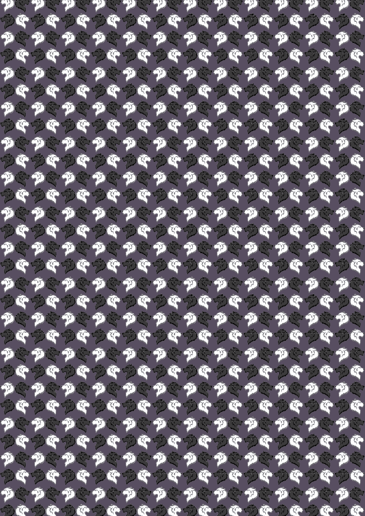

<div class="fondo">
    <div class="container-mazo-cartas">
        <div class="putaje">
            <h2>Puntos: {{this.puntos}}</h2>
        </div>
        <div class="container-carta">
            <app-carta [numeroCarta]="this.cartaActual"></app-carta>
            
        </div>
        <div class="mazo" [ngClass]="{'rotar': this.rotarCarta}">
            <div class="dorso">
                
            </div>
            <div class="proxima-carta" [ngClass]="{'mostrar': this.rotarCarta}">
                <app-carta [numeroCarta]="this.proximaCarta"></app-carta>
            </div>
            <!--<div class="fondo-mazo">
                
            </div>-->
        </div>
    </div>
    <div class="container-botones">
        <app-boton (click)="this.adivinarMayor()" [texto]="'Mayor'"></app-boton>
        <app-boton (click)="this.adivinarMenor()" [texto]="'Menor'"></app-boton>
    </div>
</div>